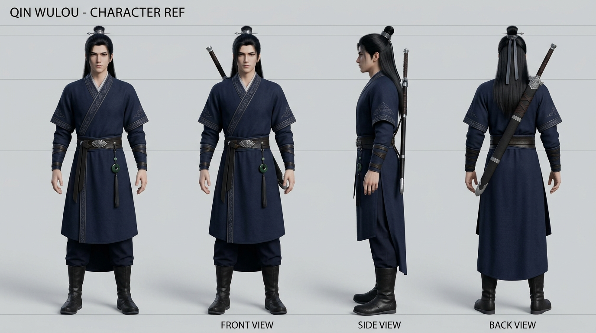
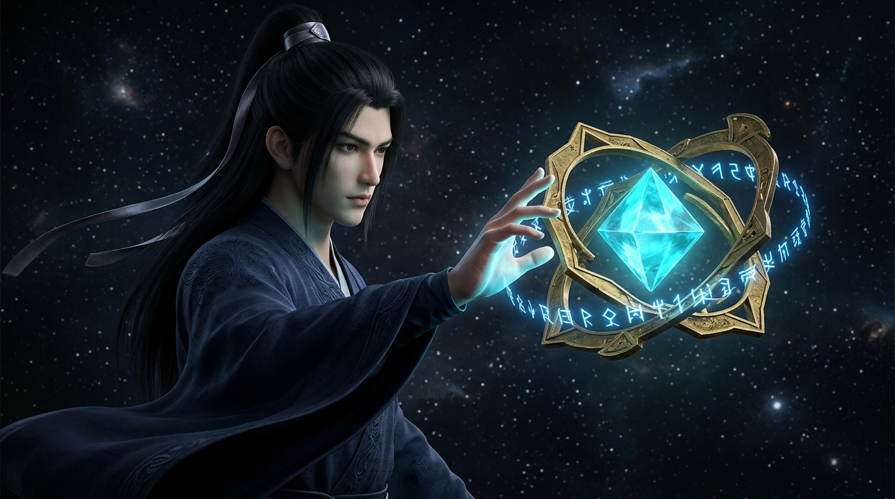
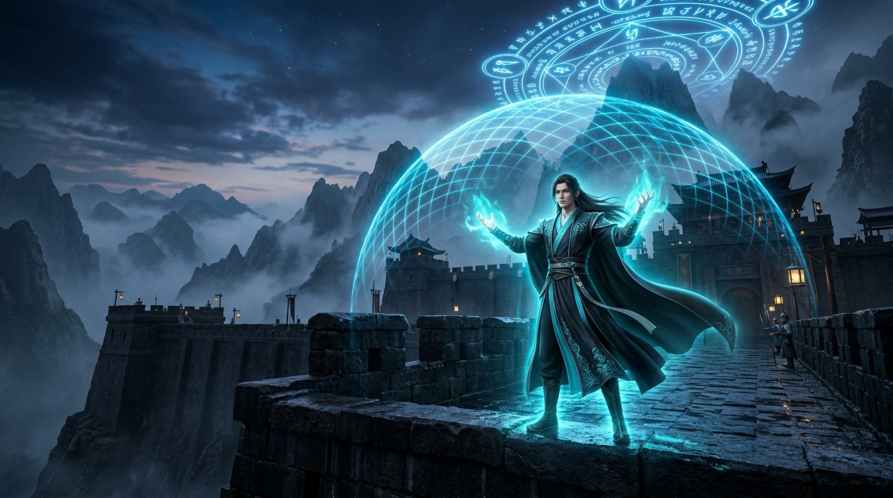

👤 步驟 1：定案主角全方位立繪與基準圖 (Character Sheet / Turnaround Anchor)
Master Reference Sheet
在為小說生圖前，必須先生成主角的「前視圖、側視圖、後視圖」三視圖/全方位立繪，並定案為黃金基準圖 (Gold Standard Reference Image)，供後續生成時作 `--cref` 或 IP-Adapter 物理特徵鎖定。(💡 點擊圖片可開啟高清原比例大圖)
秦無漏 (Qin Wulou) 3-View Turnaround Sheet

🔍 點擊看高清大圖
角色標識 (Character ID)
`qin_woulou`
五官與髮型鎖定 (Face & Hair Lock)
20 歲初少年修仙者，立體輪廓、漆黑冷眸、長黑髮以暗銀束帶收攏
服飾與姿勢鎖定 (Outfit & Pose Lock)
簡樸墨藍/漆黑武袍帶暗銀滾邊，中性站姿，無歐式鎧甲或過度裝飾
特徵錨點檔 (Feature Reference Matrix)
`visual_harness/harness/anchor_registry/qin_woulou_anchor.png`
⚙️ 步驟 2：小說分鏡與 Prompt 構建引擎 (Prompt Builder Engine)
自動讀取《無漏》小說分鏡結構，融合成保留主角錨點與全書修仙暗調風格的 Prompt。
當前選擇章節
第一卷 第004章《殘核》 (Qin Wulou Awakens Core)
登場人物 & 道具
秦無漏 (`qin_woulou`) + 殘核 (`residual_core`) @ 空胎虛無空間
Prompt 構建產出 (Prompt Output)
cinematic macro medium shot, atmospheric lighting, qin_woulou_char, young handsome Xianxia cultivator, sharp angular jawline, calm cold obsidian eyes, long black hair in dark silver ribbon, simple dark navy martial robe with silver lining, residual_core_entity, floating ancient geometrical octahedron crystal core, glowing cyan center light, orbiting golden and ethereal blue mathematical rune rings, empty_womb_domain_seed, Qin Wulou reaching his hand towards floating unfolded bronze core expanding into ancient golden geometric plates in dark void space, Cinematic dark Xianxia concept art, deep navy shadow palette, octane render lighting, high-contrast chiaroscuro
🖼️ 步驟 3：AI 章節插圖生成與前後一致性對比 (Scene Generation vs Reference)
對比「步驟 1 主角黃金立繪」與「不同章節的實景圖」，驗證人物臉部、髮型與服飾是否前後一致。(💡 點擊可開啟原比例大圖)
步驟 1: 主角立繪基準
🔍 點擊看大圖
第 004 章《殘核》 (Awakening Core)

🔍 點擊看大圖
第 050 章《七息守城》 (City Defense)

🔍 點擊看大圖
🧪 步驟 4：自動化 Consistent Quality Gate (Harness 評測與存庫)
✅ Quality Gate Passed (100%)
Anchor Token Coverage
100%
CLIP Prompt Score
35.8
Face Cosine Distance
0.82
Forbidden Violations
0
測試總評說明
全流程驗證通過！第 004 章《殘核》與第 050 章《七息守城》插圖之秦無漏面部特徵、長黑髮銀束帶與墨藍武袍完全一致。
🎨 步驟 5：互動式小說 AI 無限畫布 (Infinite Character & Scene Canvas)
Spatial Visual Node Workspace
正向節點流動：左側角色 (`qin_woulou`) 與法寶 (`residual_core`) 節點將特徵向外連線輸出 (Output Ports ➔ Input Ports)，實時注入右側的場面構圖框！
👤 角色基準 (Output Source)
`qin_woulou`
少年修仙者 | 黑髮銀束帶 | 墨藍武袍
➔ 特徵向右輸出注入
➔ 特徵向右輸出注入
🔮 古代遺物 (Output Source)
`residual_core`
八面體晶核 | 幾何金屬薄片 | 青藍符文
➔ 道具特徵向右輸出注入
➔ 道具特徵向右輸出注入
🎬 場面構圖框 (Target Render Canvas)
Live Render
第050章《七息守城》
秦無漏在青崖城牆上調用空胎界域屏障
✨ 已接收左側 2 個節點特徵 (Character Injected)
秦無漏在青崖城牆上調用空胎界域屏障
✨ 已接收左側 2 個節點特徵 (Character Injected)